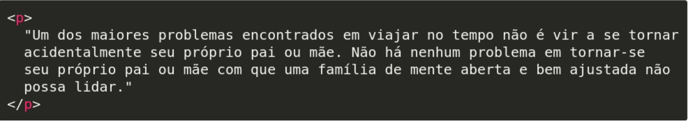
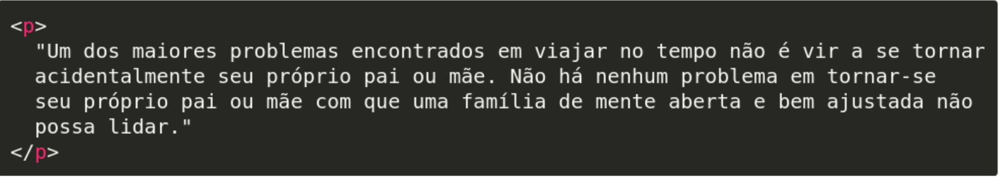
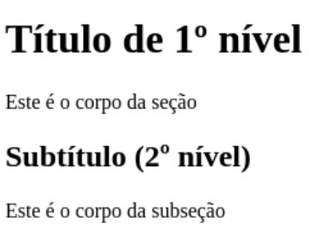
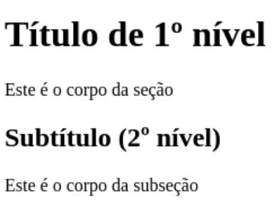

Tag de Parágrafo
Quebras de linha são feitas automaticamente
A idéia deste maravilhoso site WEB é proporcionar mais conhecimento
sobre essa maravilhosa linguagem a qual se denomina HTML. O site será
dividido em artigos explicando conceitos básicos e princípios importantes
para o melhor entendimento dessa linguagem.
HTML (abreviação para a expressão inglesa HyperText Markup Language, que significa Linguagem de Marcação de Hipertexto) é uma linguagem de marcação utilizada na construção de páginas na Web. Documentos HTML podem ser interpretados por navegadores. A tecnologia é fruto da junção entre os padrões HyTime e SGML. HyTime é um padrão para a representação estruturada de hipermídia e conteúdo baseado em tempo. Um documento é visto como um conjunto de eventos concorrentes dependentes de tempo (como áudio, vídeo, etc.),conectados por hiperligações. O padrão é independente de outros padrões de processamento de texto em geral. SGML é um padrão de formatação de textos.Não foi desenvolvido para hipertexto, mas tornou-se conveniente para transformar documentos em hiper-objetos e para descrever as ligações.
A estrutura básica do HTML são as tags html, head e body.
Envolve todas as outras tags Exceto a tag especial !DOCTYPE. Dentro dela, deve existir as tags: head e body
Tags de abertura podem ter atributos
Atributos Universais são aqueles que qualquer elemento pode ter.
Esses atributos servem, por exemplo:
Este seletor seleciona apenas um elemento em específico, como por exemplo apenas um título.
#resumo {
color: blue;
}
Este seletor, ao contrário do primeiro, seleciona elementos cujos possuem a mesma classe. Simplificando, selecionará mais de um elemento.
E, em um arquivo CSS, podemos escrever o nome da tag, seguido por um ponto ".", seguido pelo nome da classe:
#p.destacado {
font-weight: bold;
}
Ou, se quisermos usar a classe destacado para outros elementos além de o, podemos omitir o nome da tag:
.destacado{
font-weight: bold;
}
Salve uma imagem no formato .ico e, na página HTML, dentro do head, coloque, por exemplo:


Para incluir um arquivo CSS ao HTML ao invés de se usar a tag style, basta criar um arquivo no formato .css e linkar o HTML a esse arquivo CSS.
Tags de abertura podem ter atributos:

Quebras de linha são feitas automaticamente
Há a possibilidade de ter 6 níveis de títulos. Mas a quantidade de títulos é infinita…
 

Para exibir imagens…

Neste exemplo, usamos a URL de uma imagem hospedada em outro site na Internet
O atributo src="..." (abreviação de source) é usado para definir o endereço (URL) da imagem
Link externo (para fora da página):

Link interno (para algo hospedado no próprio computador)

O atributo href="..." é usado para definir o endereço do link (URL).
A tag de hiperlink possui um atributo target="..." que pode ter os seguintes valores:
_self O recurso “linkado” abre na própria aba (valor padrão).
_blank O recurso “linkado” abre em uma nova aba.
| < strong > < /strong > | < em > < /em > | < mark > < /mark > | |
|---|---|---|---|
| Usada para marcar texto com alta importância, seriedade ou urgência.Por padrão são desenhados em negrito. | Usada para dar ênfase (tipo “acentuar”) ao texto.Por padrão são desenhados em itálico. | Usadas para indicar texto que foi |
Usada para realçar parte do texto considerada importante para o leitor. Tipo quando usandos caneta marcadora de texto.Por padrão, possuem o fundo com a cor amarela |